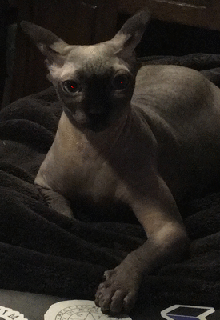

Beemo the Cat
This website is about Beemo the cat. If the economy favored cats, he would own a kingdom and a country.
Top Beemo Nicknames
- BEANS (All caps)
- Bean
- Yard of beans
- England's Menace
- The reckoning
This website is about Beemo the cat. If the economy favored cats, he would own a kingdom and a country.
This is Beans in a house. He will likely destroy it soon. He likes to eat cardboard.
This is Beans in a pickle costume. He might eat that, too.
This is Beans in the bath. He hates baths.
Surprisingly, Beans has friends. (Well. At least one friend.)